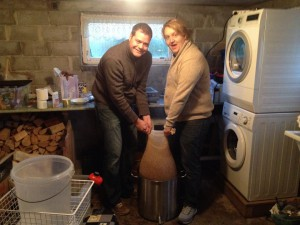
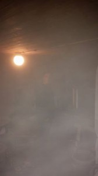

Loggfører (Gaute) vet lite om hvordan man kom frem til denne ølen men erindrer noe fra bryggetråden på facebook, cirka midt i arbeidstid, at to av medlemmene i lauget kom frem til denne. Rask googling har ført meg frem til at det må være laugets huskomponist Gahr Smith-Gahrsen som står for oppskriften. «Dette er et øl som garantert vil falle i smak hos dem som liker fyldig, mørkt øl med masse maltsmak.»
Gaute og Leif stilte glade og fornøyde til en ny dag med brygging. Husherren var også i sedvanlig godt humør, slagordet for dagen var «Det blir ikke kjekt uannsett»
Vannet var i gang 1140 og vanlieg problemer med strømbrudd og feilsøking i husets strømnett og sikringsskap var i gang, men dette er blitt såpass rutine at det ikke var noe problem for oss i kjelleren. Det var heller litt dårligere steming i stuen der husmor ikke kunne ha på noe varme. Mesking tiltok 1205 på rundt 680C . Omtrent en time etter på mener Steffen han har fått støt av vannet der koreablowupen står, Gaute og Leif avfeier dette med latter og jobber videre. Oppvarming av skyllevann tiltar før vi trenger det (vi lærer !) og det er i forbindelse med dette at Steffen konkluderer med at «Jo den gir støt» Vi kan denne gangen ikke si noe annet enn at den gjør det. Så tips til neste gang: ikke ta for mye i meskevannet evt. meskekaret når korewatten står der!


Skyllekameratene
13:27 pose ble tatt ut og temp på skyllevann var 680C
13:42 skylling avsluttet:74.1, 19 +10 liter vørter.
Preboil: OG = ….. Brix 13
Neiogneiognei. Preboil ble igjen glemt
14.07 kok.
Postboil: OG = 1.060 Brix = 14.0
Humle#1 1500
Tapp 16-20 0C
Ferdig vasket 1704
En plass inni her ble Tone og Idunn hentet og Ludvig og Guro kom så det ble en familiedag, det ble også fortært pizza. Noen klimatiske forhold på Randaberg førte til at bryggelokalet ble et steamrom i noen perioder av dagen, men det er sikkert bare sunt for huden. Øl skal jo blant annet gjøre underverker for håret.


Noe damp er påvist i kjelleren.
Bobling i gjæringskarene tiltok ganske så raskt, verifisert på snapchat.
Av nye rutiner som kan nevnes:
- Steffen varmet skyllevannet i god tid.
- Leif svidde ikke koreawatten, men har begynt å skalle i lampen, loggfører telte hele 5 ganger.
- Gaute var innom hele dagen.
Edit: FG målt til 1.014 etter 14 dager. Flasking iverksatt og fullført. 112 flasker er ny rekord!
For the record: Har alltid skallet i lampen, men det kom litt i skyggen av Koreawattbrenning før…